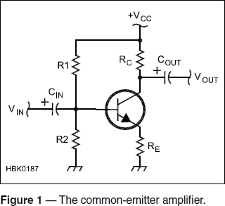
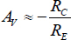
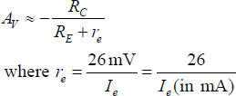
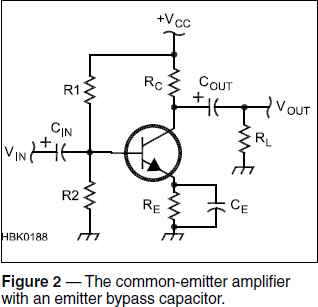
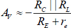
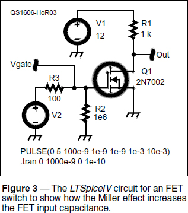
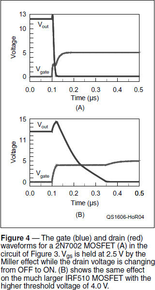

Experiment #161 — Transistor Subleties
Last month’s column touched on the effects of some transistor characteristics that can be ignored for simple and low-frequency applications, but which become significant in more demanding circuits. This month we’re going to tackle two of these effects in different circuits you can build and test: dynamic emitter resistance (introduced last month) and the Miller effect.
Accounting for re
I received a nice note from Loren Moline, WA7SKT, who was breadboarding a common-emitter amplifier (see Figure 1) and discovered that the measured gain was less than calculated. In the original “Hands-On Radio” Experiment #1, the equation for voltage gain was given as:

 | [Eq 1] |
This is close enough in many cases. (The minus sign indicated an inverting amplifier.) However, what Loren found is that with RC = 4.7 kΩ and RE = 100 Ω, the measured magnitude of gain was only 37 when the calculated gain was 47. Good for Loren not just throwing up his hands and thinking, “I guess that’s okay.” He dug a little deeper and discovered that the dynamic emitter resistance, re, introduced last month, has to be taken into account as well:
|  | [Eq 2] |
When this equation is used for the 1 mA of quiescent current in Loren’s circuit, the calculated gain worked out to a magnitude 37.3, almost the same as the measured value.
Taking the process of accountability one step further, it’s also important to take into account the load resistance, RL in Figure 2. From the ac signal’s standpoint, RL is in parallel with RC and so the true equation for gain becomes:

 | [Eq 3] |
How about a little workbench check of all this? Start with the circuit of Figure 1 using Loren’s values for RC and RE along with 39 kΩ for R1 and 6.8 kΩ for R2. The values are derived in Experiment #1 to set ICQ ≈ 4 mA. With all of those values in hand, what is the expected magnitude of AV? (4700 / (100 + 6.5) = 44.1)
Go ahead and build the circuit using an inexpensive 2N3904 or 2N4401 and a 10 μF electrolytic or tantalum capacitor for CIN. Verify that you got the right gain at 10 kHz. You might even want to measure RC and RE and use the exact values to calculate gain. (If you lower the frequency of operation, what causes the gain to drop below about 200 Hz? The reactance of CIN begins to become significant — 100 Ω at 160 Hz.)
Next, add the emitter bypass capacitor, CE, of Figure 2 — a 100 μF component will do nicely. At 10 kHz, a 100 μF capacitor’s reactance is how much? (XC = 0.16 Ω) In parallel with the 100 Ω RE, the emitter is basically connected to ground. Change RC to 470 Ω to reduce the circuit’s gain. Measure gain and compare it to the calculated value from Eq 2 if RE = 0. (AV = –470 / 65 = –72.3.) Keep going and add a 10 μF capacitor for COUT and a 470 Ω resistor for RL. Calculate gain using Eq 3 (AV ≈ –36.2) and see if your circuit behaves as expected.
Miller Effect
Another internal component that is surprising to the beginning designer trying to get gain at high frequencies is the Miller capacitance, CM. This is partially a real capacitance created by the transistor’s internal structure and partially caused by the inverting amplifier configuration. Both bipolar and FETs have some parasitic capacitance from the input (base or gate) to the output (collector or drain for an inverting amplifier or switch circuit). Working with FETs now, that gate-to-drain capacitance is Cdg. As Miller discovered in 1920 when working with vacuum tube amplifiers, the gain of the circuit (–AV) also amplified the effect of the capacitance, essentially creating a larger capacitor with a value:
CM = Cdg (1 + AV) | [Eq 4] |
This Miller effect occurs for any inverting amplifier with internal or external capacitance between the input and output: the amplifier’s output moving in the opposite direction to the input makes the capacitor look much bigger than it really is.2 (This is true for any type of feedback impedance — here we are limiting the discussion to capacitance.)
The Miller effect can be observed fairly easily by turning on an FET while watching the gate voltage. Figure 3 shows an LTSpiceIV schematic that we’ll use for a circuit simulation that shows the effects of CM.3 The magnitude of this circuit’s voltage gain is:

Av = gm Rd | [Eq 5] |
For the 2N7002 enhancement-mode MOSFET used here, gm is specified to be 320 mS.4 With an Rd of 1 kΩ, voltage gain would be quite high, AV = 1000 × 0.32 = 320. So the FET’s small reverse transfer capacitance, Crss = 4 pF, is turned into 4 × 320 = 1280 pF by the circuit’s voltage gain!
You can see this yourself with a suitable oscilloscope and signal generator. To give you an idea of what you’re looking for, though, Figure 4A shows what happens as a fast input pulse is applied to the 2N7002’s gate. (The LTSpiceIV voltage source values are set to produce a 0 to 5 V pulse beginning at 100 ns with a rise and fall time of 1 ns, a pulse width of 1 ms, and a repetition rate of 10 ms. The simulation’s .TRAN parameters configure the simulation to begin at 0 seconds and run for 1 μs with a time step of 0.1 ns.) Voltage traces are taken at the FET drain (Vout) and the FET gate (Vgate).

As you can see in Figure 4A, the gate voltage rises quickly but then abruptly flattens out at about 2.5 V and stays there for about 15 ns before rising again toward the final value of 5 V. At the same time, the output voltage, Vout, starts with a sharp upward transient due to the input signal feeding through to the output through Crss with the FET still off and gain almost zero.
When the gate voltage, Vgs, reaches its threshold voltage of 2.5 V, though, the FET starts to turn on and gain increases to its full value. Now the full Miller effect is in evidence as the rapid increase in capacitance “soaks up” any charge being pumped into the gate by the input pulse. This lasts until the drain voltage reaches zero and is no longer changing. That also ends the Miller effect and Vgs resumes its climb to the final value of 5 V.
The 2N7002 is a very small MOSFET designed for light-duty switching. What happens when a larger FET is used? Change the 2N7002 to an IRF510 (right-click on the FET symbol and select PICK NEW MOSFET) and re-run the simulation after changing the stop time in the simulation to 1 μs. Wow! Figure 4B shows that the much larger device with at least 20 pF of capacitance experiences a much larger Miller effect, causing Vgs to stay “flat” for 350 nsec. To turn this much larger device on and off quickly — either as a switch or an RF amplifier — the gate drive circuit has to be able to drive a much larger load than for the 2N7002. This is why special gate driver ICs are often used with larger FETs.
You can build this circuit on your workbench if you have a suitably fast oscilloscope and a signal generator capable of producing pulses with fast rise times. I recommend using the “dead bug” or “Manhattan-style” construction techniques presented in Experiment #90 to minimize the effects of stray capacitance and inductance present on solderless breadboards. A 5 V logic gate can serve as a fast pulse source, as well. Use a Schmitt trigger (74HC14 or equivalent) to square up a pulse with longer rise and fall times.
When you start using your scope, remember that you are looking for events that occur in a short period of time, immediately after the FET gate voltage begins to rise. Trigger on the leading edge of the drive pulse — either using a dc threshold or a positive-going slope. If you’re using an IC to generate the pulse, trigger off the input to the gate to create a short delay between triggering the scope and the flattening out of the waveform. Set time/division on the horizontal sweep to be something approximately like the simulated waveform’s time scale. Then zoom in and look for that curious plateau as suddenly, “It’s Miller time!”
Notes
1All previous “Hands-On Radio” experiments are available to ARRL members at www.arrl.org/hands-on-radio.
2N1090-D “Understanding and Predicting Power MOSFET Switching Behavior,” OnSemi, www.onsemi.com/pub_link/Collateral/AN1090-D.PDF.
3LTSpiceIV is available for downloading from the Linear Technology website as described in “Hands-On Radio” Experiments 83 – 86 which also discuss how to use the simulator. The circuit schematic file for this experiment is available on the “Hands-On Radio” website’s page for this experiment.
4gm is transconductance in amps/volt with units of siemens (S).